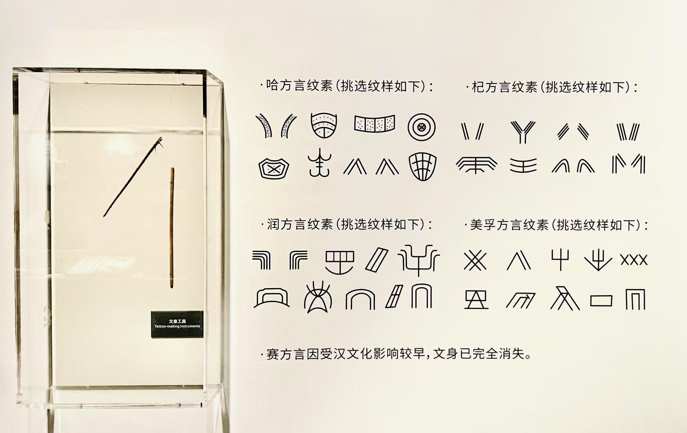

黎锦纹铭
黎纹锦韵
黎锦飞光
锦织经纬
锦绣千针
黎纹生成
从黎族人口分布情况来看，哈、杞、润等方言人口占黎族人口的大部分，分别居住在海南岛沿海、中部和南部大部分地区。美孚方言人口居住在海南岛西部，主要聚居在昌化江下游流域。赛方言人口居住在海南岛东南部。因受地理、气候、物产等自然因素的影响，黎族各方言的生产生活及风俗习惯略有不同，织锦图案的题材丰富多样，体现出不同方言的艺术风格。
五大方言区文化特征与纹面习俗

拍摄于海南省博物馆
哈方言
文化特征
聚居环境
：主要分布在海南岛沿海及丘陵地带，以三亚、陵水、乐东等地为核心
传统生计
：以稻作农业为主，兼营渔业和热带作物种植，擅长利用海洋资源
节庆习俗
：最隆重的节日为"三月三"，祭祀祖先与自然神灵，伴有对歌、跳竹竿舞等活动
艺术特色
：织锦以几何纹、人形纹为主，色彩明快，常用红、黄、蓝三色搭配
纹面习俗
哈方言妇女纹面多在十二至十五岁之间进行，图案呈几何形分布：
前额纹为横向平行线，象征规整的田垄
两颊纹为放射状线条，如太阳光芒般扩散
下颌纹呈网格状，代表丰收的粮仓
纹面寓意为"成年礼"与"家族标识"，同时认为可避邪祈福，死后能顺利回归祖先之地。
杞方言
文化特征
聚居环境
：集中在海南岛中部山区，五指山、琼中一带为主要聚居地
传统生计
：山地农耕为主，种植水稻、玉米和薯类，擅长狩猎与采集山货
节庆习俗
：重视"牛节"，每年春耕前祭祀耕牛，祈求农事顺利，有"祭山"的传统
艺术特色
：音乐舞蹈带有山地文化特质，织锦喜用黑色底布，以动物纹（如鹿纹、鸟纹）为特色
纹面习俗
杞方言纹面风格简约而独特：
额头至鼻梁有纵向条纹，象征山路蜿蜒
眼角两侧有对称的曲线纹，形似山涧溪流
纹面工具多用荆棘刺蘸烟灰调制的颜料，分三次完成
纹面被视为"山地通行证"，认为能获得山神庇护，同时也是区分不同支系的重要标志。
润方言
文化特征
聚居环境
：主要居住在海南岛南部山区，以白沙、昌江等地的盆地与河谷为主
传统生计
：稻作与手工业并重，擅长纺织、制陶，有"纺织之乡"的美誉
节庆习俗
："祭神树节"最为独特，崇拜千年古木，认为其是祖先的化身
艺术特色
：织锦以"龙被"最负盛名，图案繁复华丽，融合神话传说与自然意象
纹面习俗
润方言纹面是黎族中最复杂的样式之一：
全脸布满连续纹样，前额至下颌形成整体图案，如织锦般连贯
包含圆形纹（象征太阳）、方形纹（代表土地）、曲线纹（寓意河流）
纹面过程分阶段进行，从童年开始，至成年完成全部图案
纹面不仅是美的象征，更代表家族的尊贵地位，不同家族有固定的纹面图谱。
美孚方言
文化特征
聚居环境
：分布于海南岛西部，集中在昌化江下游流域的东方、昌江等地
传统生计
：灌溉农业发达，擅长利用河流资源种植水稻和甘蔗，手工艺以制糖闻名
节庆习俗
："年节"（春节）最为隆重，有"送旧迎新"的祭祀仪式，注重家族团聚
艺术特色
：织锦以"联珠纹"为典型，色彩沉稳，常用深蓝、靛蓝与白色组合
纹面习俗
美孚方言纹面具有鲜明的地域特色：
以"人"字形纹为核心，从鼻梁向两颊延伸，如水流分支
下巴处有半月形纹，象征昌化江的弯道
纹面时会加入少量矿物颜料，使图案呈青蓝色，更为持久
纹面被视为"河流的印记"，与他们依赖昌化江生存的生活方式密切相关，代表对水源的敬畏。
赛方言
文化特征
聚居环境
：位于海南岛东南部，以保亭、万宁等地的热带雨林边缘为主
传统生计
：刀耕火种与梯田农业结合，擅长种植热带水果和药用植物
节庆习俗
："祭雷节"独具特色，认为雷声是丰收的信号，有模仿雷声的歌舞表演
艺术特色
：音乐以鼻箫、口弓琴为代表，织锦喜用植物纹（如槟榔纹、稻穗纹）
纹面习俗
赛方言纹面风格轻盈灵动：
以点状纹和曲线纹为主，分布于眼周、颧骨和鼻翼两侧
图案模仿热带雨林中的藤蔓与花卉，寓意与自然共生
纹面由家族中的女性长辈完成，是传承技艺的重要载体
纹面被视为"自然的纹身"，象征女子已具备采集植物、辨识草药的能力，是成年的标志。